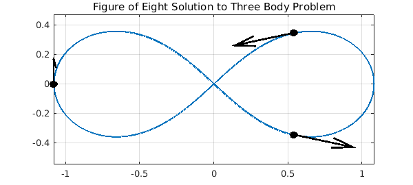
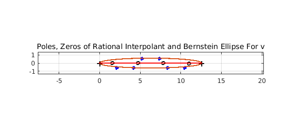
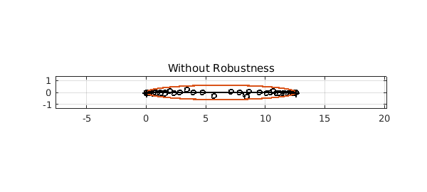

This example is motivated by a correspondence with Divakar Viswanath, University of Michigan.
Introduction
The three body problem is a system of ODEs modelling three particles of prescribed masses $m_1$, $m_2$, $m_3$ under mutual gravitation in two or three dimensions. We will consider the two dimensional case, so that we can use complex arithmetic to solve it in Chebfun.
$$ u'' = \frac{m_2(v-u)}{|v-u|^3} + \frac{m_3(w-u)}{|w-u|^3}, $$
$$ v'' = \frac{m_1(u-v)}{|u-v|^3} + \frac{m_3(w-v)}{|w-v|^3}, $$
$$ w'' = \frac{m_1(u-w)}{|u-w|^3} + \frac{m_2(v-w)}{|v-w|^3} $$
subject to initial conditions.
Figure of Eight Solution
In 2000 Chenciner and Montgomery [3] presented a paper showing the existence of "A remarkable periodic solution of the three-body problem in the case of equal masses". The solution had been found independently by Moore in 1993, but this did not include an existence proof. The particles travel around a figure of eight shape (shown below).
Here we use modified versions of the initial conditions given in the paper.
dom = [0,4*pi];
a = 6.32591398/(2*pi); % scaling factor to give period 2pi
opts = odeset('abstol',1e-13,'reltol',1e-13);
fun = @(t,u) a*[u(4);u(5);u(6);...
((u(2)-u(1))./abs(u(2)-u(1)).^3+(u(3)-u(1))./abs(u(3)-u(1)).^3);...
((u(1)-u(2))./abs(u(1)-u(2)).^3+(u(3)-u(2))./abs(u(3)-u(2)).^3);...
((u(1)-u(3))./abs(u(1)-u(3)).^3+(u(2)-u(3))./abs(u(2)-u(3)).^3)];
u = chebfun.ode113(fun, dom,[0.540508553669932 + 0.345263318559681i,...
0.540508532338285 - 0.345263317862853i,...
-1.081017086008497 - 0.000000000697245i,...
-1.097122372968180 - 0.233604741427372i,...
1.097122377013713 - 0.233604786311327i, ...
-0.000000004046108 + 0.467209527738458i],...
opts);
plot(u(:,1),'linewidth',2)
title('Figure of Eight Solution to Three Body Problem')
axis equal; grid on; hold on;
plot(u(0,1:3), 'ok', 'MarkerFaceColor','k','MarkerSize',7)
quiver(real([u(0,1),u(0,2),u(0,3)]),imag([u(0,1),u(0,2),u(0,3)]),...
real([u(0,4),u(0,5),u(0,6)]),imag([u(0,4),u(0,5),u(0,6)]),...
0.4, 'k','linewidth',2);
hold off

Such types of solutions to the $n$-body problem, where the particles follow periodic paths, have since been called choreographies.
Computing The Complex Singularities
Let us consider the chebfun representing the third particle, whose initial value appears on the left in the above plot. This is a complex valued chebfun with domain $[0, 4\pi]$ (2 periods).
v = u(:,3)
v =
chebfun column (1 smooth piece)
interval length endpoint values
[ 0, 13] 402 complex values
Epslevel = 1.000000e-13. Vscale = 1.081017e+00.
We can compute a rational interpolant for $v$ using the robust rational interpolation and least squares algorithm described in [2], which is implemented by Chebfun in the function ratinterp. Then we can consider this rational interpolant as an analytic continuation of the underlying function and analyse its singularities.
We are considering this function in complex time! An abstract concept which can inform us of properties of the solution in real time. For example, if there is a complex singularity $t_0$ near to the real line, the function is somewhat less smooth at time $t = \mbox{real}(t_0)$ than it is elsewhere.
The above output shows that the degree of $v$ is about $400$. In general, a good choice for the degrees of the numerator and denominator for a rational interpolant of a polynomial with robustness is about half the degree, so we shall use a type $(151,150)$ rational interpolant. We don't expect there to be $150$ singularities -- ratinterp will remove extra poles of small residue. For the robustness part, we use a tolerance of $10^{-12}$. The default tolerance is $10^{-14}$, but the system was solved above to a tolerance of $10^{-13}$ and will have noise of this magnitude, which the robustness procedure will ignore if the tolerance is set to around $10^{-12}$.
[p,q,rh,mu,nu,poles] = ratinterp(v,151,150, [], [], 1e-12); mu nu
mu =
151
nu =
8
We can see that the robustness of the algorithm reduces the degree of the denominator drastically. We still have a good error estimate on the real interval:
max(abs(rh(linspace(0,4*pi,100)) - v(linspace(0,4*pi,100))))
ans =
4.857852405291055e-10
Analysis of Singularities
The poles calculated above are as follows.
poles
poles = 2.092587877358921 - 0.539634193302825i 2.912598685191316 + 1.939005723982471i 4.188725912975051 - 0.551336407479808i 5.233710423473792 + 0.551707401808514i 7.332660260488846 + 0.551707250048496i 8.377644844195080 - 0.551336357855684i 9.653787333617759 + 1.939008596013644i 10.473782750539081 - 0.539634603132285i
A straightforward analysis considering the symmetries of the system (communicated to me by Viswanath) shows that if the solution that $v$ is approximating has any complex singularities, the real parts may only take the values $(\pi/3)[1,2,4,5]~(\mbox{mod}\ 2\pi)$.
real(poles)*3/pi
ans = 1.998274227215095 2.781326867946919 3.999938605842549 4.997825307644586 7.002174758821829 8.000061530531870 9.218687842219166 10.001725785713536
We have found poles with real parts approximately $(\pi/3)[2,4,5,7,8,10]$, which agrees with the analysis. We do appear to have missed one singularity at $\pi/3$ and $11\pi/3$, but it is typical to expect only the singularities near the centre of the interval to be found. We have also found two additional poles. A plot shows that these are further fromthe real line.
plot(roots(q,'all'),'o','markersize',4,'color','b','markerfacecolor','b')
hold on
plot(roots(p,'complex'), 'ok', 'markersize',5)
axis equal, grid on
chebellipseplot(v)
title('Poles, Zeros of Rational Interpolant and Bernstein Ellipse For v');
plot([0,4*pi]+eps*1i,'-r')
hold off

chebellipseplot(v) plots the Chebfun ellipse associated with $v$. This ellipse is an estimate, based on the decay of the Chebyshev coefficients of $v$, of the largest ellipse with foci $-1$ and $1$ in which the underlying function approximated by $v$ is analytic. The poles appear around the edge of this ellipse, which explains why we missed those poles at the edges of the interval -- those zeros are too far out from the ellipse.
Let us plot the configuration of the particles at time $t = (\pi/3)[1,2,4,5]$, the real parts of the poles of our solution. The black particle is particle 3, which has a complex singularity just off the real line at these times.
c = [1,2,4,5];
t = pi/3*c;
for j = 1:4
subplot(2,2,j)
plot(v,'linewidth',2), axis equal, grid on, hold on
plot(u(t(j),1:2), 'ok','MarkerSize',7)
plot(u(t(j),3), 'ok', 'MarkerFaceColor','k','MarkerSize',7)
quiver(real([u(t(j),1),u(t(j),2),u(t(j),3)]),...
imag([u(t(j),1),u(t(j),2),u(t(j),3)]),...
real([u(t(j),4),u(t(j),5),u(t(j),6)]),...
imag([u(t(j),4),u(t(j),5),u(t(j),6)]),...
0.4, 'k','linewidth',2)
title(sprintf('Configuration At t=%dpi/3', c(j)))
hold off
end
Without Robustness
Now let us do exactly the same with robustness switched off ($\mathrm{tol}=0$):
[p,q,rh,mu,nu,poles,res] = ratinterp(v,157,156, [], [], 0);
clf, plot([0,4*pi]+eps*1i,'-r'), hold on
plot(roots(q,'complex'),'o','markersize',4,'color','b','markerfacecolor','b')
plot(roots(p,'complex'), 'ok', 'markersize',5)
axis equal, grid on
chebellipseplot(v)
title('Without Robustness')

This is a demonstration of the phenomenon of spurious poles or "Froissart doublets" -- each pole is paired (almost) with a zero in the numerator. Robust ratinterp removes such poles with an implementation based on the singular value decomposition.
References
-
Private communication with Divakar Viswanath, July 2011
-
A. Chenciner and R. Montgomery. A remarkable periodic solution of the three-body problem in the case of equal masses. Annals of Mathematics- Second Series, 152(3):881-902, 2000.
-
P. Gonnet, R. Pachón, and L.N. Trefethen. Robust rational interpolation and least-squares. Electronic Transactions on Numerical Analysis, 38:146-167, 2011.
-
Chebfun Example approx/RationalInterp